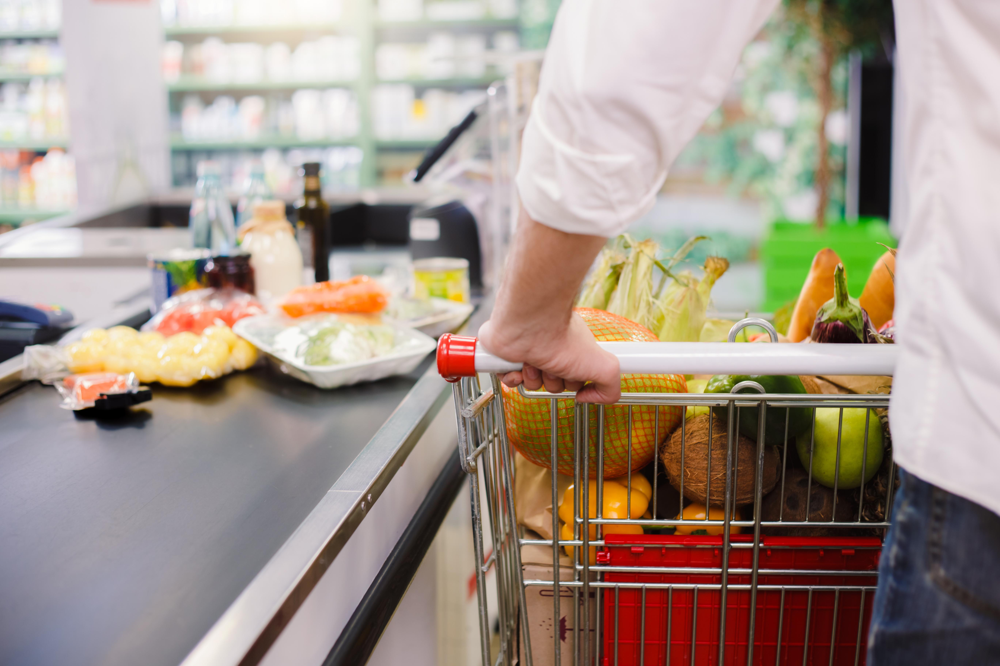

كيفية التعامل مع محفزات التسوق غير الصحية
أنا جائع
- تناول وجبة خفيفة صحية مثل الجزر الصغير أو الزبادي قليل الدسم قبل ذهابك للتسوق
إنها للبيع ضمن عروض التخفيضات، أو لدي قسيمة لشرائها
- لا تشتري عروضًا خاصة بالطعام غير الصحي، فقط لأنها عروض خاصة
- ابحث عن طرق لتوفير المال لشراء سلع صحية بدلا من ذلك
يبدو مغريا
- ابتعد عن الأقسام المغرية داخل المتجر، مثل أماكن بيع الحلوى ورقائق البطاطس والآيس كريم
- اشتري كمية صغيرة جدا. على سبيل المثال، اشتري قطعة واحدة من الآيس كريم بدلاً من علبة كاملة
- اشتري منتجات صحية. لكن قم بإلقاء نظرة على بطاقة المادة الغذائية الخاصة بالمنتج ولا تعتمد على وجود كلمة "صحي" وحدها على المنتج
- خذ في الاعتبار دائما أن هدف المتجر هو حسك على شراء المزيد من الأشياء
أشعر بالحزن / القلق / الضغط / الجنون
- قم بتأجيل التسوق حتى تشعر بالتحسن
- تعامل مع شعورك بطريقة صحية. على سبيل المثال، خذ نفسًا عميقًا
إنها لزوجتي / لأطفالي / لأحفادي
- اظهر حبك بطرق صحية. سيكون ذلك أفضل لك ولهم
إنها العلامة التجارية المفضلة لدي، وبالتالي أشتريها دائما
- تسوق بقائمة للمنتجات التي تبغي شرائها، وتمسك بها
- ذكّر نفسك بأنك تقوم باختيارات أفضل الآن
- جرّب متلفًا، مثل أكشاك بيع المنتجات الزراعيةجرًا مخت